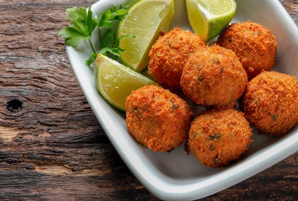
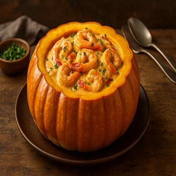
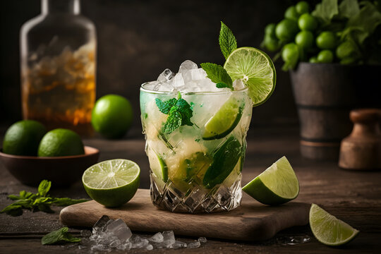

Bolinhos crocantes de bacalhau desfiado, batata e temperos especiais. Servidos com molho tártaro.

Peixe branco marinado no limão, cebola roxa, coentro e pimenta dedo-de-moça. Acompanha chips de batata-doce.

Tradicional prato brasileiro com camarões refogados em molho cremoso, servido dentro de uma moranga assada. Acompanha arroz branco.

Peixe e camarão cozidos com pimentões, tomate, cebola, leite de coco e azeite de dendê. Servido com arroz e farofa de dendê.

Risoto preparado com arroz arbório, camarão, lula, polvo e mexilhões, finalizado com vinho branco e ervas frescas.

Tentáculos de polvo grelhados na brasa, regados com azeite de ervas, servidos com batatas rústicas e tomatinhos confitados.

Camarões em creme de mandioca com leite de coco e dendê, finalizado com coentro fresco. Acompanha arroz branco.

Filé de robalo selado, coberto com molho agridoce de maracujá, sobre purê de banana-da-terra.

Mousse cremosa de maracujá com calda de frutas frescas.

Torta de limão com base crocante e cobertura de merengue.

Cachaça, limão, açúcar e gelo. Refrescante e perfeita para acompanhar frutos do mar.

Rum, hortelã fresca, limão, açúcar e água com gás. Refrescância cubana com toque brasileiro.

Vinho branco seco e leve, harmonização perfeita com peixes e frutos do mar.

Cerveja artesanal de lúpulo cítrico, corpo médio e final levemente amargo. Servida bem gelada.

Escolha entre laranja, abacaxi, maracujá ou limonada.

Hidratante, levemente adocicada e servida bem gelada. Perfeita para um dia ensolarado.